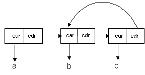
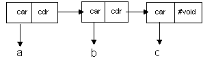
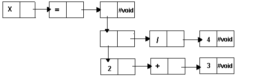

List
|
|
List
|
The original Lisp was billed as a list processing language. It is one of the oldest computer languages in use today, and was one of the first to implement true Artificial Intelligence techniques. It is the strength of it's list processing features and functionality that makes Lisp the language of choice, in the United States, for such applications as parsing, semantic analysis, and natural language processing. Pairs and Lists together with all of the functions available to manipulate them greatly expand the analytic power of the Analytic Information Server programmer.
The most difficult aspect of Pairs and Lists is their simplest aspect. Pairs are things. Lists are not things. Lists are one way of chaining Pairs together. Lists are not even the only way of chaining Pairs together (albeit an important way but not the only way). Some similar examples from everyday experience would include rain and crowds. Water droplets are things. Rain is not a thing. It is a collection of falling water droplets. There are collections of water droplets that are not rain. Rain is only one way of configuring lots of water droplets. People are things. Crowds are not things. They are collections of people under certain circumstances. Crowds are not the only configuration of lots of people. There are other ways lots of people can be collected together, villages, cities, clubs, etc.
A List is a special way of chaining Pairs together. There are many ways of chaining Pairs together. A List is only one way (albeit a very useful way). A List must contain one or more Pairs. There is no such thing as an empty list. This would be #void, as follows:
'( ) => #void
In a List, the cdr of the first Pair must point to another Pair, whose cdr must point to another Pair, until the final Pair has a cdr which contains #void, as follows:

A collection of Pairs, which contain no terminating Pair, is NOT a List, as follows:

Lists can be constructed from Pair constants, but there is also a special constant for building Lists. For instance, the following constants are equivalent.
'(1 . (2 . (3 . #void)))
'(1 2 3)
Any symbol inside of a list constant is automatically converted to a quoted symbol. The List `(a b c) is equivalent to `(a: b: c: ) and is also equivalent to `(`a `b `c).
`(a b c)
`(* (+ 1 3 ) 9 )
A List is made up of Pairs chained together. Each Pair has a car and cdr. Each car is an element in the List . A symbol The following diagram show how the List `(a b c) is represented in Lisp:
`( a b c )
The List ( a b c ) is composed of a chain of 3 Pairs:
First Pair: car = a: cdr = `( b c )
Second Pair: car = b: cdr = `( c )
Third Pair: car = c: cdr = #void
The first car value in a List is known as the head of the List. The symbol a: is the head of the List`( a b c ). The symbol b: is the head of List `( b c ) and the symbol c: is the head of the List`( c ).
The first cdr value in a List points to the tail of the List. The List '( b c ) is the tail of the List `( a b c ). The List `( c ) is the tail of the List`( b c ) and the List `( c ) has no tail. It's tail is #void.
Use Lists to represent data structures, which have a lot of unplanned or irregular twists, turns, and changes of direction. One such example is the parse tree for a computer language. The lisp function parses strings into Lists of symbolic, string, and numeric tokens as follows:
(lisp "x = ((2 + 3) / 4)") => '(x = ((2 + 3) / 4))
Here is a drawing representing the List shown above:

Notice how irregular the shape of the List is. Adding another operator to the input string, or another numeric argument, may change the shape of the output in unpredictable ways. Lists are excellent tools for storing such irregular structures. Vectors and Structures are not ideal for this application.
Visual Basic Comparison
The Pair and List constructs do not have a Visual Basic equivalent. Visual Basic is not suitable for List processing applications
Example1
A List is a useful construct to simplify accessing an element in a pair. Lists allow accessing an element via an integer index. For example:
(setq X `( a b c d ) )
Results in the container X containing the 4 pairs:
` ( a . ( b c d ) )
` (b . ( c d ) )
`( c . ( d ) )
`( d . #void)
To access each element of X
(car X) Returns a
(car (cdr X) ) Returns b
(car ( cdr (cdr X ) ) ) Returns c
(car (cdr ( cdr (cdr X ) ) ) ) Returns d
However, since X is a List, the elements may be accessed more simply as
X[0] Returns a
X[1] Returns b
X[2] Returns c
X[3] Returns d
The Pair and List constructs do not have a Visual Basic equivalent. Visual Basic is not suitable for List processing applications.
The List is a Heap Object or an Object Data Type. The Analytic Information Server Object Types are stored in the Heap and are managed by the Heap manager. The Analytic Information Server Heap manager supports object resizing, garbage collection, and anti-fragmentation algorithms so that the user may concentrate on the analysis and modeling of data rather than on memory management. Without exception, all of the Object types are identified by an object id. The object id identifies a block of memory, managed by the Lambda Information Server memory manager, in which the Object's data is stored.
The Analytic Information Server Heap Object and Native Data types can be saved and loaded to and from persistent (disk file) storage at any time. Containers with immediate data are saved on disk in fixed length records equal to the size of the container. Containers with Heap object references are saved in fixed length records, which are automatically expanded to include the contents of the Heap object, and any objects referenced by the Heap object, etc. This feature is called Object Closure Management and is automatic with every Analytic Information Server container database save.
Analytic Information Server containers may be loaded from any database repository record at any time. If the data in the record is immediate, the database load fills the container with the immediate data. If the data in the record is an object closure, the database load fills the container with a Heap object reference, and all of the objects in the record are loaded back into the Heap with the same referential relationships they had when they were saved in the repository.
The List object can be demonstrated by the following functions.
The List object can be demonstrated by the following examples.